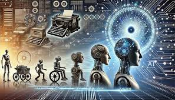
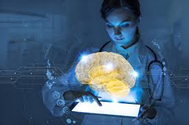
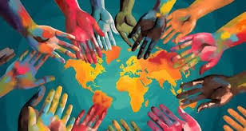

O futuro com a Inteligencia artificial: Inovação Tecnológica
Postado em por Antonio José Alves de Sousa

À medida que a inteligência artificial avança, vislumbramos um futuro onde máquinas e humanos colaboram de maneira inovadora. Especialistas preveem que, nos próximos anos, a IA não apenas otimizará processos em setores como saúde, educação e transporte, mas também criará novas oportunidades de emprego. No entanto, a questão permanece: estaremos prontos para nos adaptar a essas mudanças? A educação e a formação contínua serão cruciais para garantir que todos possam se beneficiar dessa revolução tecnológica.
Economia Global em Foco
Postado em por João Pedro Alves de Sousa
Em um mundo cada vez mais interconectado, a economia global enfrenta uma série de desafios e oportunidades. Com a recuperação das consequências da pandemia, as nações estão adaptando suas estratégias para lidar com a inflação, as cadeias de suprimento e a transição para energias sustentáveis. Especialistas alertam que a colaboração internacional será crucial para enfrentar crises futuras e promover um crescimento econômico inclusivo. A inovação tecnológica e o investimento em infraestrutura são vistos como pilares fundamentais para impulsionar a competitividade e a resiliência das economias no cenário global.
Últimas Notícias
Avanços na Saúde
Postado em por Eliane do Disterro Moura | Josefa Carmina dos santos

A tecnologia tem revolucionado a área da saúde, permitindo avanços significativos na prevenção e diagnóstico de doenças. Com o uso de sistemas de informação e inteligência artificial, é possível prever condições de saúde antes mesmo de seus sintomas se manifestarem, proporcionando intervenções precoces e tratamentos mais eficazes. Além disso, a comunicação entre profissionais de saúde foi facilitada, permitindo uma troca de informações mais rápida e precisa, o que é essencial para a melhoria do atendimento ao paciente. Essa transformação tecnológica não apenas aumenta a eficiência dos serviços de saúde, mas também contribui para um cuidado mais centrado no paciente.
Cultura e Arte
Postado em por João Felipe Alves de Sousa

A arte e a cultura desempenham papéis fundamentais na formação da identidade e na expressão da diversidade humana. Através da arte, somos capazes de comunicar emoções, contar histórias e refletir sobre as realidades sociais e históricas que nos cercam. A cultura, por sua vez, abrange as tradições, costumes e práticas que moldam a vida de uma sociedade, influenciando desde a linguagem até as interações cotidianas.